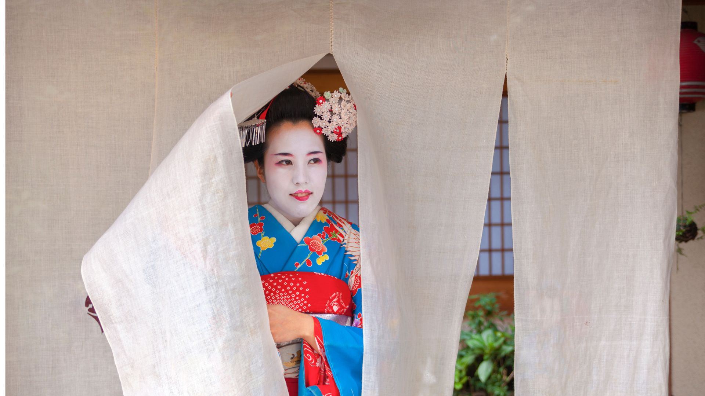
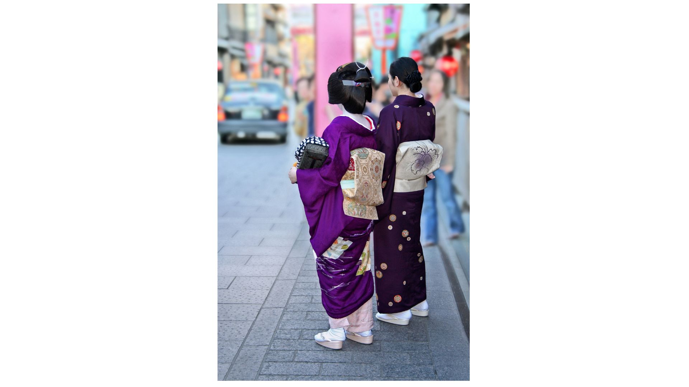

海外からのお客様へ
日本の伝統文化「花街」の美しい世界を体験してください

花街文化とは
花街（かがい）は、芸者や舞妓が在籍し、日本の伝統芸能や文化を継承する特別な地域です。千年以上の歴史を持つこの文化は、日本舞踊、三味線、茶道、華道などの洗練された芸術の集大成として発展してきました。
現代において、花街は単なる観光地ではなく、生きた文化遺産として機能しています。芸者さんたちは長年の修練を積んだプロフェッショナルであり、お客様に最高のおもてなしを提供します。
海外からお越しの皆様には、この美しい日本文化を通じて、日本の心と美意識を感じていただけることを心より願っております。

文化ガイド
芸者と舞妓
芸者は、日本の伝統芸能を習得したプロフェッショナルな女性です。長年の修練を積み、お客様をおもてなしします。
舞妓は、京都特有の呼び方で、芸者になるための修行中の女性を指します。華やかな着物と独特の髪型が特徴です。
お茶屋
お茶屋は芸者さんとの宴席を楽しむ伝統的な料亭です。「一見さんお断り」という制度があり、通常は紹介が必要です。
しかし、最近では外国人観光客向けの体験プランも用意されており、事前予約により利用可能です。
芸事
芸者さんが披露する伝統芸能には、日本舞踊、三味線、太鼓、笛などがあります。それぞれが深い歴史と技法を持っています。
季節に応じた演目が用意されており、その時々の日本の美しさを表現します。
お座敷遊び
伝統的な遊びやゲームを通じて、芸者さんやお客様同士のコミュニケーションを楽しみます。
「とらとら」や「金毘羅船船」などの代表的な遊びがあり、日本語が分からなくても楽しめるよう配慮されます。
エチケット・マナーガイド
基本的なマナー
丁寧な挨拶
「こんばんは」「ありがとうございます」など、簡単な日本語での挨拶を心がけましょう。
適切な服装
フォーマルな服装を心がけ、清潔で品のある装いを選択してください。
写真撮影の許可
写真撮影は必ず事前に許可を取ってから行ってください。
不適切な接触
芸者さんへの過度な身体接触は厳禁です。適切な距離を保ってください。
大声での会話
静かで上品な会話を心がけ、他のお客様への配慮を忘れないでください。
個人的な質問
プライベートな質問は避け、芸事や文化について話すことを心がけましょう。
会話のコツ
季節の話題
日本では四季の移ろいを大切にします。季節の花や行事について話すと喜ばれます。
文化への関心
日本舞踊や三味線について質問すると、芸者さんも喜んで説明してくださいます。
あなたの国について
ご自身の国の文化や風習について話すことで、文化交流を楽しめます。
予約・体験ガイド
予約の流れ
お問い合わせ
メールまたは電話でご希望の日時とプランをお知らせください。
確認・調整
空き状況を確認し、詳細な内容をご相談させていただきます。
予約確定
前金をお支払いいただき、予約が確定します。
事前ガイダンス
マナーや注意点について事前にご説明いたします。
よくある質問
はい、大丈夫です。英語対応可能なスタッフや通訳サービスをご用意しております。また、簡単な日本語フレーズ集もお渡しします。
フォーマルまたはセミフォーマルな服装をお勧めします。男性はスーツやジャケット、女性はドレスやスーツが適しています。カジュアルすぎる服装は避けてください。
はい、指定された場所と時間内で撮影可能です。芸者さんとの記念写真も含まれています。ただし、演目中の撮影はご遠慮いただいております。
はい、事前にお知らせいただければ、ベジタリアン、ハラル、アレルギー対応のお料理をご用意いたします。予約時に詳細をお聞かせください。
キャンセル料は以下の通りです：3日前まで無料、前日50%、当日100%。緊急事態の場合は個別にご相談いたします。
日本ではチップの習慣はありませんので、お気になさらず。料金にサービス料が含まれております。感謝の気持ちは言葉で十分です。
お問い合わせ
メール
international@kagai-portal.jp
24時間受付（返信は営業時間内）
電話
+81-XX-XXXX-XXXX
営業時間: 10:00-18:00（日本時間）
オンライン相談
ビデオ通話での事前相談も可能です
対応言語
日本の心に触れる特別な体験を
千年の歴史が育んだ美の世界で、忘れられない思い出を作りませんか？